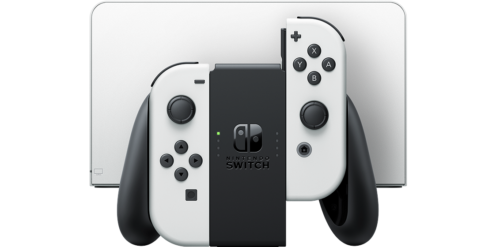
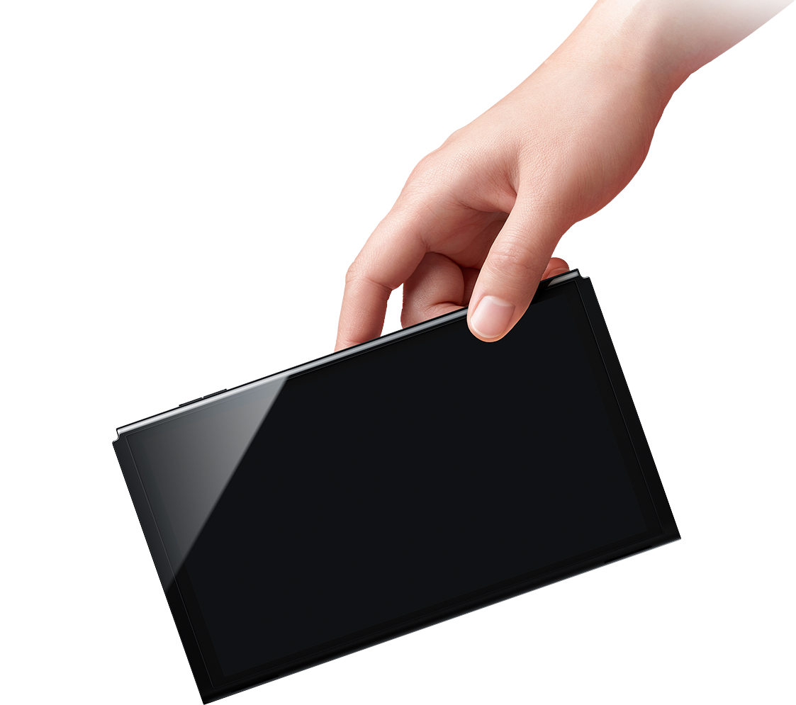
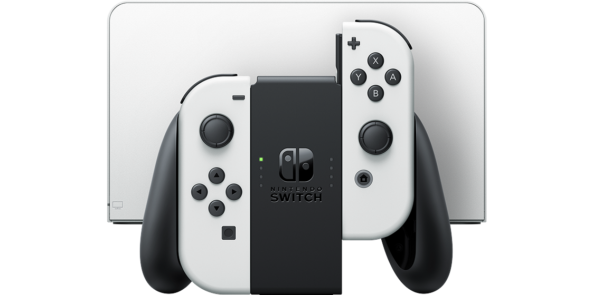
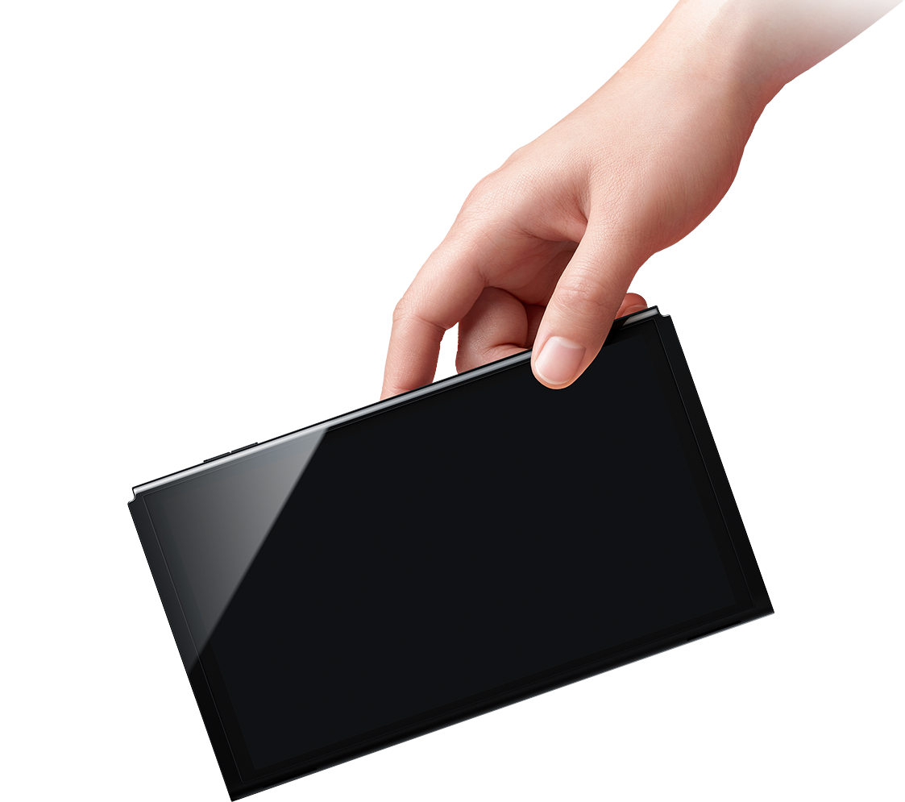
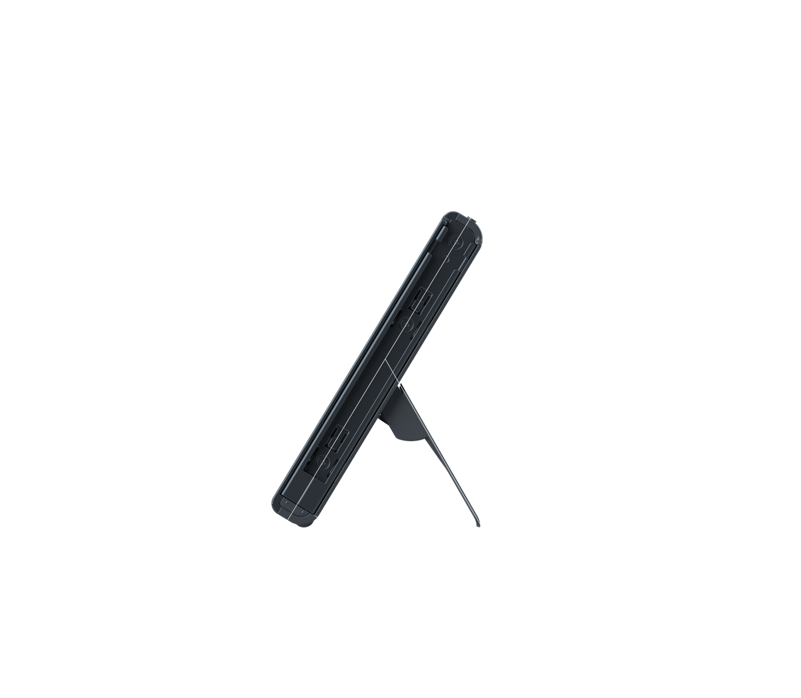
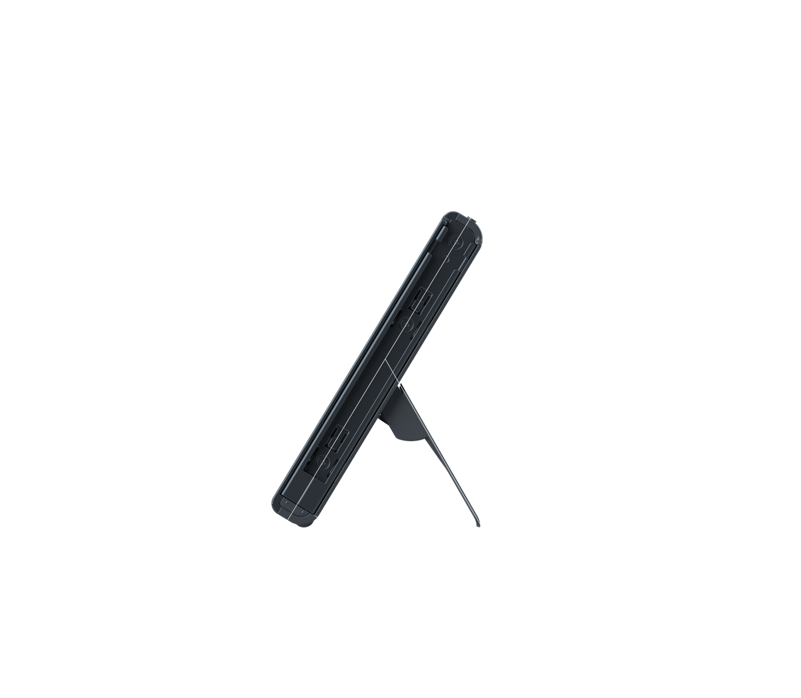
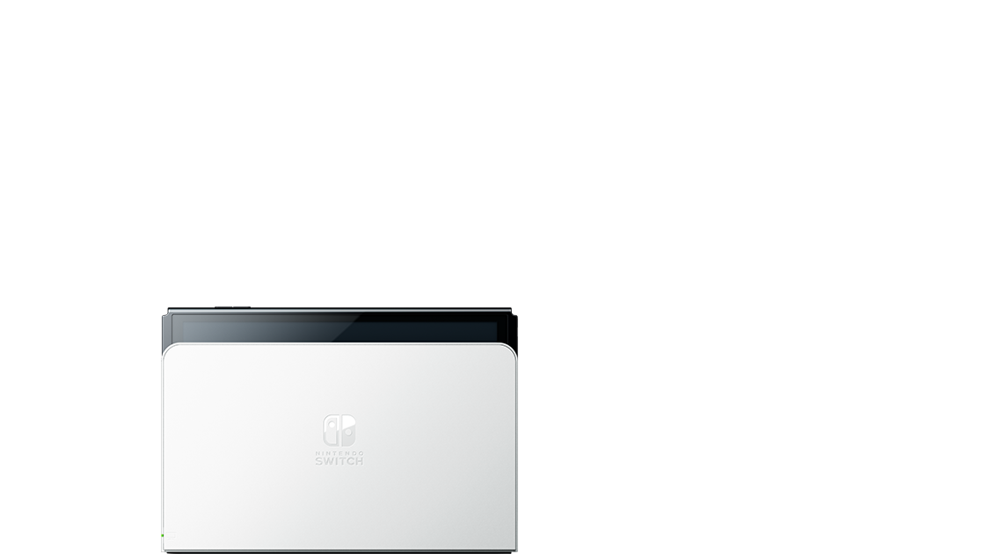

선명한 색감의 OLED 디스플레이
Nintendo Switch OLED 모델
2021.10.8[금] 발매
희망소비자가격 : 415,000원


2021.10.8[금] 발매
희망소비자가격 : 415,000원
Nintendo Switch 패밀리에
「Nintendo Switch™(OLED 모델)」이 새롭게 추가되었습니다.
언제, 어디서든, 누구와도,
OLED 모델이기에 가능한 선명한 색감의 화면으로 게임을 즐길 수 있습니다.
화면의 베젤이 슬림해지면서 7인치로 넓어진 OLED 디스플레이.
바람에 나부끼는 풀숲, 몰려오는 적, 최고 속도로 달려나가는 카트 등,
다양한 게임 속 세계를 선명한 색감으로 그려냅니다.
Nintendo Switch (OLED모델)
Nintendo Switch
 



본인이
원하는 각도로
테이블 모드를 즐긴다
뒷면의 스탠드를 세우고 컨트롤러를 나눠 들면
언제, 어디서든, 화면을 함께 보며
테이블 모드로 대전 플레이나 협력 플레이를 즐길 수 있습니다.
「Nintendo Switch (OLED 모델)」은
「프리 스톱 방식」의 넓은 스탠드를 채택.
보기 편한 각도로 확실히 고정할 수 있기 때문에,
테이블 모드로 게임 플레이를 쾌적하게 즐길 수 있습니다.

유선 LAN 단자를 탑재한 새로운 독
「Nintendo Switch (OLED 모델)」에 포함된 독에는, 2개의 USB 단자와 TV에 접속하기 위한 HDMI 단자에 더해 새롭게 유선 LAN단자를 탑재하여, TV 모드에서 더욱 안정된 온라인 플레이를 즐길 수 있습니다.
64GB의 본체 저장 메모리
본체 저장 메모리는 「64GB」.
추가로 microSD 카드(별매)를 이용하면, 저장 용량을 확장할 수 있습니다.
마음에 드는 게임을 다운로드해두면
언제, 어디서든, 바로 플레이할 수 있습니다.
※ 데이터를 저장할 수 있는 용량은 시스템 영역을 제외한 용량입니다.
새로워진 스피커
휴대 모드와 테이블 모드에서 깨끗한 사운드로
게임 플레이를 즐길 수 있습니다.
언제, 어디서든, 누구와도,3가지 플레이 모드
「Nintendo Switch™」는 플레이 장면에 맞추어 형태를 바꾸는 게임기.
언제, 어디에서나, 마음 가는대로,
자유로운 스타일로 게임을 즐길 수 있습니다.
Nintendo Switch 독을 TV에 연결하여 본체를 세팅하면, TV의 큰 화면으로 게임을 즐길 수 있습니다.
본체 스탠드를 세우고 컨트롤러를 나눠 들면, TV가 없는 곳에서도 바로 화면을 함께 보며 플레이를 즐길 수 있습니다.

이동 중이나 외출했을 때, 장소에 구애 받지 않고 혼자서 플레이하거나, 마음이 맞는 동료와 모여서 함께 플레이를 즐길 수 있습니다.
컨트롤러Joy-Con
「Nintendo Switch(OLED 모델)」에는 좌우가 한 세트인 컨트롤러 「Joy-Con (조이콘)」이 들어 있습니다. 가로 잡기, 세로 잡기 이외에도, 한쪽의 Joy-Con을 다른 플레이어에게 건네어 '나누어'잡으면, 언제, 어디서든, 대전이나 협력 플레이를 즐길 수 있습니다.
Nintendo Switch끼리 이어지는 멀티 플레이
가지고 모여서 연결 「Nintendo Switch (OLED 모델)」에서도, 「Nintendo Switch」, 「Nintendo Switch Lite」에서도, 본체를 가지고 모이면 최대 8대까지 로컬 통신으로 연결되어, 대전이나 협력 등 멀티 플레이를 즐길 수 있습니다.
인터넷으로 연결 「Nintendo Switch Online(유료)」에 가입하면 멀리 떨어진 친구나 전 세계 플레이어와도 대전·협력 플레이가 가능합니다. 스마트폰용 앱과 연동시켜 친구와 만나거나 보이스챗을 하면서 플레이하는 것도 가능합니다.
「Nintendo Switch (OLED 모델)」에서 모든 Nintendo Switch 소프트웨어를 즐길 수 있나요?
모든 Nintendo Switch 소프트웨어에 대응하고 있습니다. 단, 「Nintendo Switch (OLED 모델)」과 「Nintendo Switch」의 본체 사이즈나 화면 사이즈가 다르기 때문에, 일부 「Nintendo Labo 시리즈」에 대해서는 게임 체험에 차이가 생길 수 있습니다. 닌텐도 이외의 소프트웨어에서도 본체 사이즈나 화면 사이즈가 다른 것이 원인으로 게임 체험에 차이가 발생하는 경우가 있습니다.
「Nintendo Switch (OLED 모델)」의 독은 「Nintendo Switch」에서도 사용할 수 있나요?
유선 LAN 단자를 포함해 사용하실 수 있습니다. ※본체 업데이트가 필요한 경우가 있습니다.
「Nintendo Switch」의 독은 「Nintendo Switch (OLED 모델)」에서도 사용할 수 있나요?
사용하실 수 있습니다. ※본체 업데이트가 필요한 경우가 있습니다.
현재 사용하고 있는 Joy-Con을「Nintendo Switch (OLED 모델)」에서도 사용할 수 있나요?
Joy-Con 기능에 변경되는 부분이 없기 때문에, 그대로 사용하실 수 있습니다.
2대째의 「Nintendo Switch」 구매을 검토하고 있습니다만, 다운로드 구매한 소프트웨어나 저장 데이터는 「Nintendo Switch (OLED 모델)」, 「Nintendo Switch」 , 「Nintendo Switch Lite」 간에 공유가 가능한가요?
가능합니다. Nintendo Switch 고객지원 「2대째 본체 구입 후에 해야 할 일」을 참고해주세요.
지금까지 「Nintendo Switch」에서 사용했던 주변기기는 그대로 「Nintendo Switch (OLED 모델)」에서도 사용할 수 있나요?
주변기기 페이지를 참고해주세요. 자세한 내용은 이쪽으로
「Nintendo Switch (OLED 모델)」의 본체 화면의 선명도를 조절할 수 있나요?
설정에서 화면의 선명도를 조절할 수 있습니다.